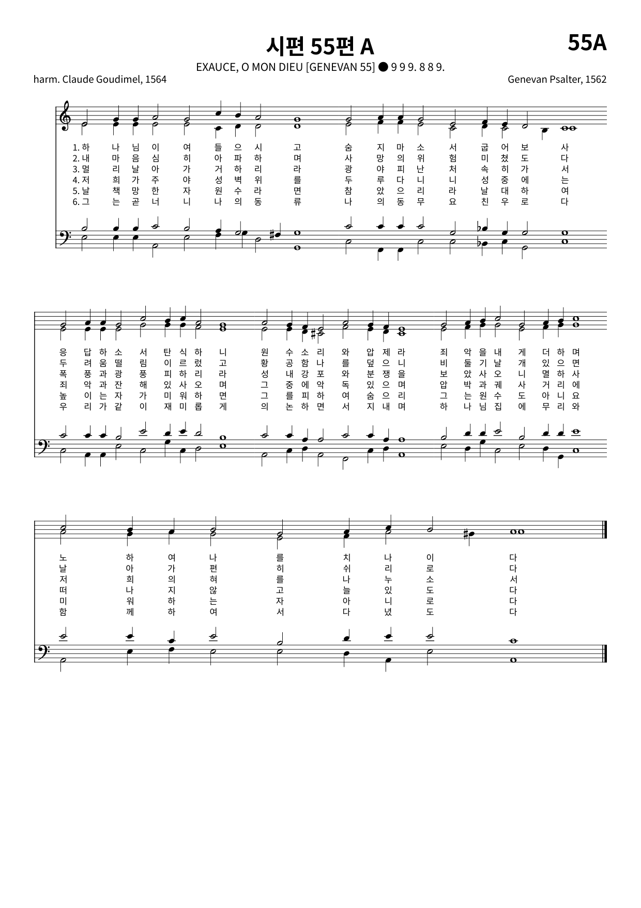

시편 55편 A
EXAUCE, O MON DIEU [GENEVAN 55] · 9 9 9. 8 8 9.
곡조: Genevan Psalter, 1562 · 화성: Claude Goudimel, 1564 · 가사: 개역한글판 시편 55편 편역(AI 초벌 편역판 · 신학 감수 전) · 6절
시편 55편은 2곡으로 나누어 실었습니다: A B · 이 곡은 시편 55편 가사의 1~6번째 절입니다.
악보 PDF MusicXML(출력용) MusicXML(반주용, 전주·반복 포함) 개역한글 시편 55편 읽기
악보
← 시편 54편 목록반주 재생(준비 중)시편 55편 B →
가사
1절 (시편 1~3절)
하나님이여 들으시고
숨지 마소서 굽어 보사
응답하소서 탄식하니
원수 소리와 압제라
죄악을 내게 더하며
노하여 나를 치나이다
하나님이여 들으시고
숨지 마소서 굽어 보사
응답하소서 탄식하니
원수 소리와 압제라
죄악을 내게 더하며
노하여 나를 치나이다
2절 (시편 4~6절)
내 마음 심히 아파하며
사망의 위험 미쳤도다
두려움 떨림 이르렀고
황공함 나를 덮으니
비둘기 날개 있으면
날아가 편히 쉬리로다
내 마음 심히 아파하며
사망의 위험 미쳤도다
두려움 떨림 이르렀고
황공함 나를 덮으니
비둘기 날개 있으면
날아가 편히 쉬리로다
3절 (시편 7~9절)
멀리 날아가 거하리라
광야 피난처 속히 가서
폭풍과 광풍 피하리라
성내 강포와 분쟁을
보았사오니 멸하사
저희의 혀를 나누소서
멀리 날아가 거하리라
광야 피난처 속히 가서
폭풍과 광풍 피하리라
성내 강포와 분쟁을
보았사오니 멸하사
저희의 혀를 나누소서
4절 (시편 10~11절)
저희가 주야 성벽 위를
두루 다니니 성중에는
죄악과 잔해 있사오며
그 중에 악독 있으며
압박과 궤사 거리에
떠나지 않고 늘 있도다
저희가 주야 성벽 위를
두루 다니니 성중에는
죄악과 잔해 있사오며
그 중에 악독 있으며
압박과 궤사 거리에
떠나지 않고 늘 있도다
5절 (시편 12절)
날 책망한 자 원수라면
참았으리라 날 대하여
높이는 자가 미워하면
그를 피하여 숨으리
그는 원수도 아니요
미워하는 자 아니로다
날 책망한 자 원수라면
참았으리라 날 대하여
높이는 자가 미워하면
그를 피하여 숨으리
그는 원수도 아니요
미워하는 자 아니로다
6절 (시편 13~14절)
그는 곧 너니 나의 동류
나의 동무요 친우로다
우리가 같이 재미롭게
의논하면서 지내며
하나님 집에 무리와
함께 하여서 다녔도다
그는 곧 너니 나의 동류
나의 동무요 친우로다
우리가 같이 재미롭게
의논하면서 지내며
하나님 집에 무리와
함께 하여서 다녔도다